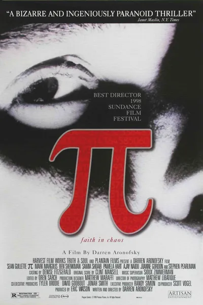

Фильм · 1998 · Детектив, Драма
Максимилиан Коэн, одержимый математик, верит, что мир — это система, код которой можно вычислить. Он собирает домашний компьютер под названием «Евклид» и получает 216-значное число, предсказывающее котировки акций — или нечто большее. За этим числом охотятся Уолл-стрит и знатоки каббалы, а мозг героя раскаляется и выходит из строя, словно перегревшийся процессор. Дебют Даррена Аронофски — черно-белый, шумный и клаустрофобичный триллер об одержимости, где математика заменяет мистику, а побочный эффект оказывается важнее самого открытия.
Maximilian Cohen, an obsessive mathematician, believes the world is a system and its code can be found. He builds a home computer called Euclid and computes a 216-digit number that predicts stock prices — or something more. Wall Street and Kabbalah scholars hunt the number while the hero's head wears out like an overheated processor. Darren Aronofsky's debut: a black-and-white, noisy, claustrophobic thriller about obsession, where math replaces mysticism and the side effect matters more than the discovery.
← Вернуться в каталог IT Movies